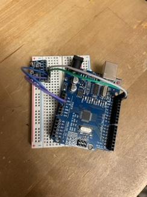
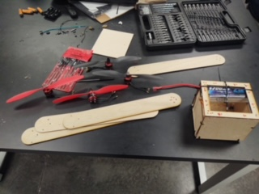
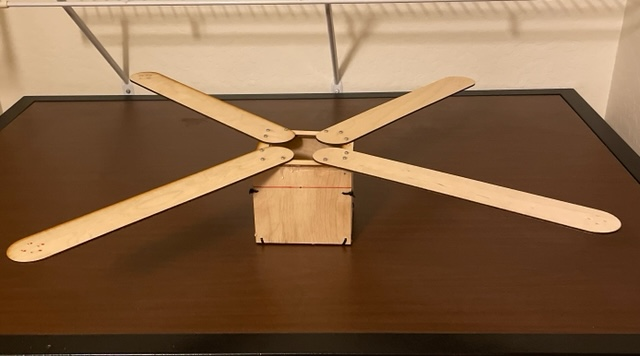
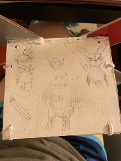
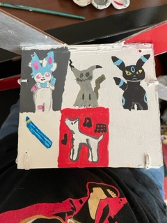
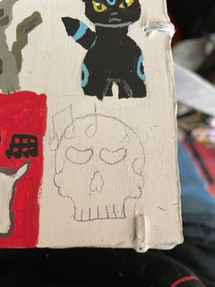
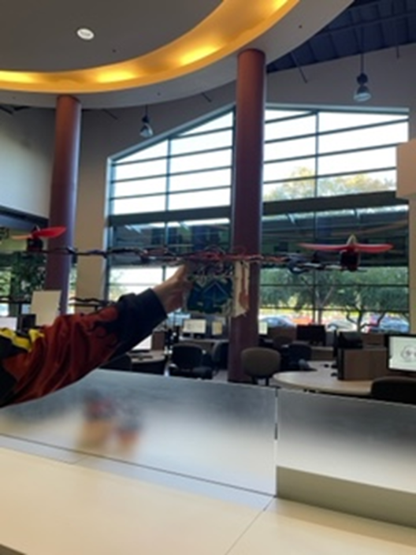
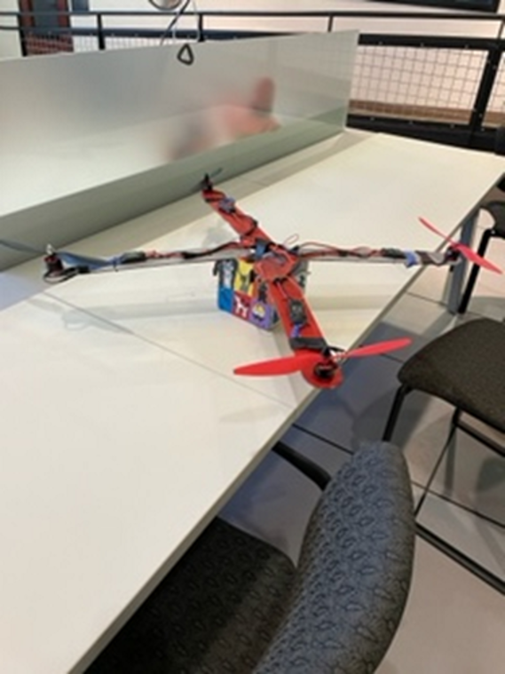
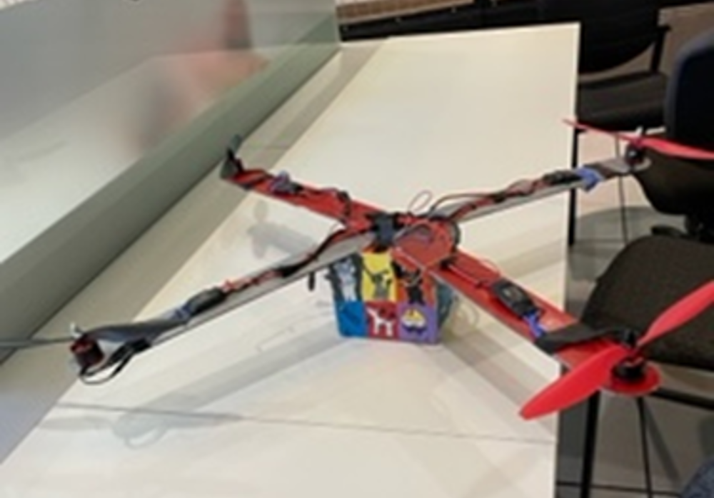
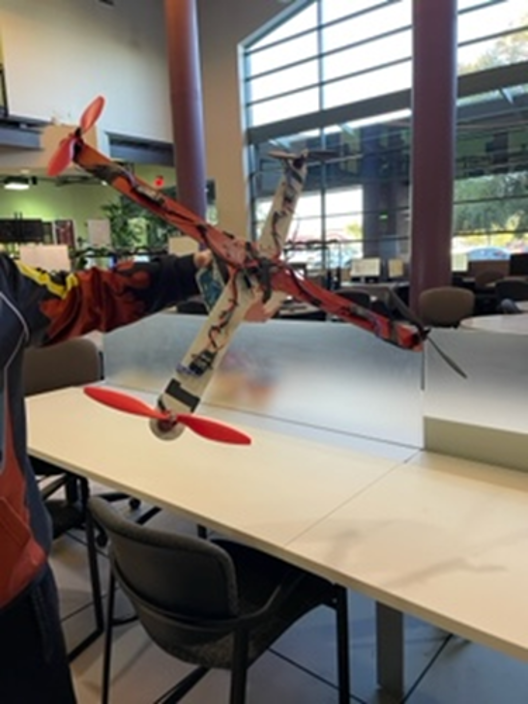

Welcome to History of Resy the Fire Pigeon Page
The history of the drone was a long one
- Design and complete robotic and embedded systems solutions that apply to real-world situations and challenges.
This is our drone in some of its first stages, we had many drfeams for our drone that didn't come to light like adding leds and a arm to grab things but dispite that we made a drone that we can hold our head high to.



- Here is it in the middle stages, the middle stages where some of the hards due to everything slowly coming togther but we took our time and bliud it piece by piece. We had some hardships when it can to putting in the electioncal in the body of the drone but we did it in the end



- Here is it in its finally stages, It was fun building it and we had our ups and downs with the project but we a we're proud of what we had made.



